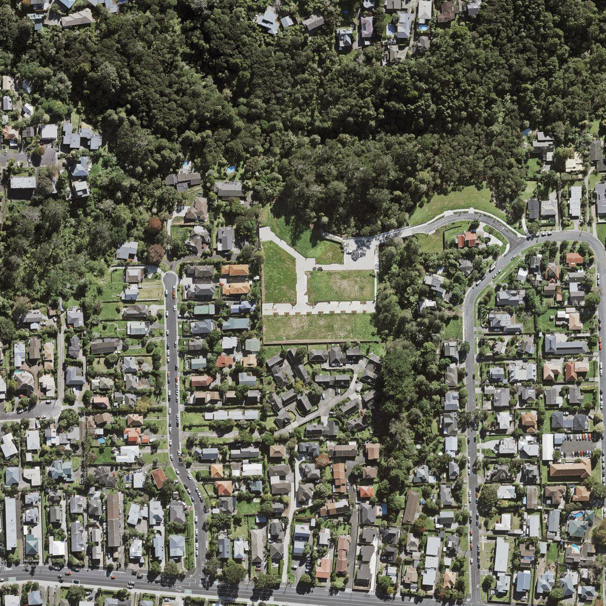
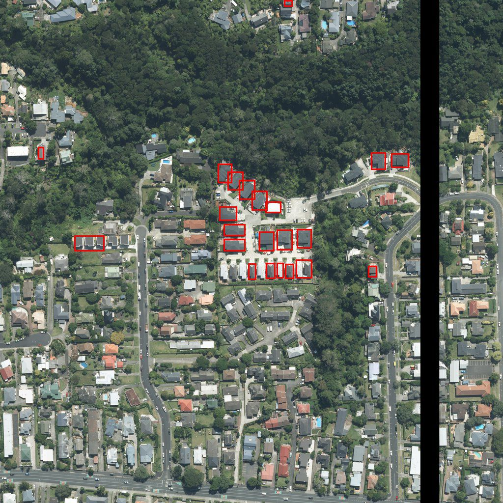

Satellite Survey 2026
A proof of concept for a system that keeps an address master file up to date. It finds new construction in aerial photos, then estimates the street address of each new building.
Overview
The US Census Bureau recently moved to in-office satellite surveying to maintain its address records. I wanted to see how far recent AI models could automate that work. The project builds on Hao Chen's BIT change-detection model (ResNet-18 with a transformer) and the LEVIR-CD dataset.
What I built
- Fixed the original code so it runs out of the box: replaced deprecated functions, removed the need for label files at inference time and added diagnostic metrics.
- Built a preprocessing pipeline that stitches LINZ JPEG 2000 aerial tiles of Auckland (2017 and 2024) and downsamples them from 0.075 m to the 0.5 m/pixel resolution the model expects, cut into 256×256 tiles.
- Drew bounding boxes around connected regions of detected change, which made the results much easier to read and check.
- Converted each detection's centre into GPS coordinates and reverse-geocoded it with Nominatim to estimate a street address.
- Combined everything into one pipeline with a GUI for reviewing results.
Results
The system detected every instance of new construction in the test area. Two limitations remain: buildings close together can merge into one detection, and address estimates can pick the wrong street for corner lots or properties with access from two streets. A real deployment would still need someone to review the results.
Try it
Click anywhere inside the highlighted area of Auckland's North Shore. The demo fetches the 2017 and 2024 LINZ aerial photos for a 512 m square around that point, runs the change-detection model, and draws a red box around each new building it finds.
Showing an example: a new subdivision on Maika Lane, Birkenhead.

